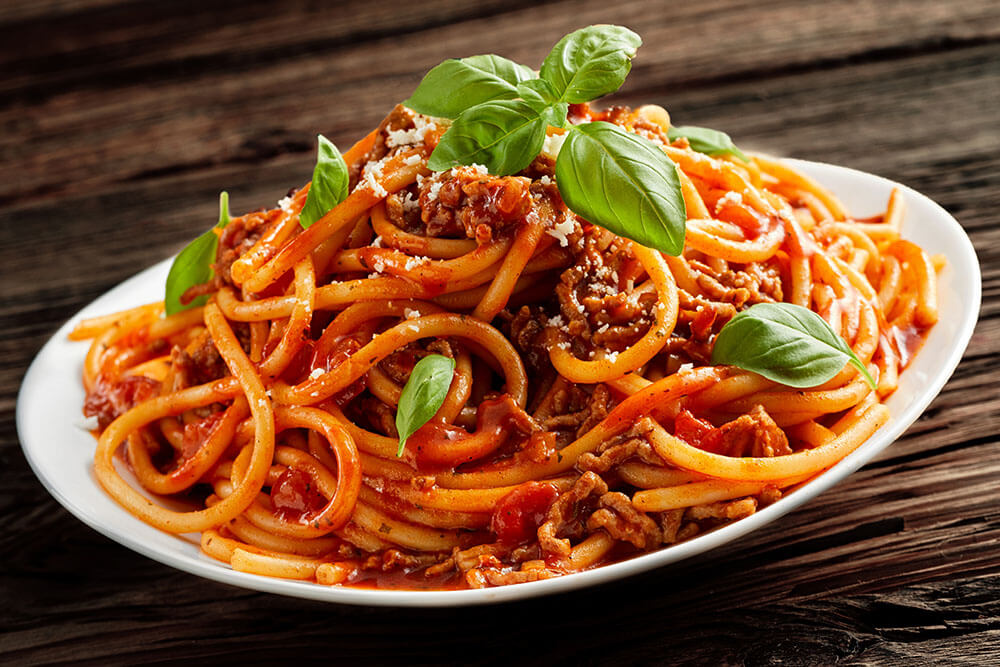

Home Page
Fast 20 minute bolognese spaghetti

Description
Hearty and comforting, this meaty, easy bolognese sauce recipe takes less time to make than it does to disappear into hungry tummies.
Ingredients
- One package of spaghetti
- 500g of minced meat of your choice
- Tomato puree
- Dry spices of your choice
- One large onion
Instructions
- Sautee chopped onion in oil, using frying pan
- Add minced meat, let stew until almost finished
- Add your spices
- Stir, add puree, and let cook for 2-3 minutes.
- At the same time cook spaghetti in boiling salted water in other sicke
- Serve with parmesan and enjoy!